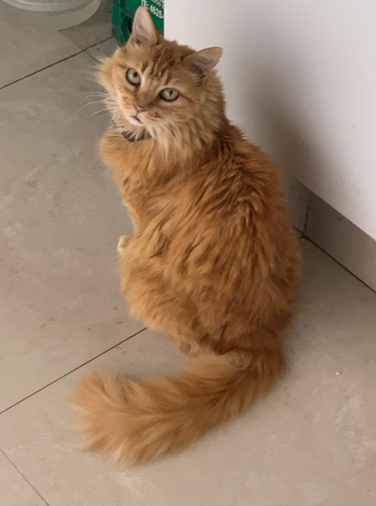

Historia
Esta página se creo para dar en adopción responsble a diferentes gatitos que fui rescantando a lo largo de estos dos años. Surgió del amor que obtuve al adoptar mi primera gata hace ya 5 años. Lamentablemente ella partió a los cielos este año a causa de su avanzada edad, tenia 15 años. Se llamaba Misha y nos regalo una experiencia inolvidable que nos cambio la definición que nosotros teníamos de lo que es ser un gato. Ella resultó ser todo lo contrario a las creencias populares. Era cariñosa, paciente, habladora y por sobre todas las cosas muy compañera. Nos demostró el hermoso vínculo que se puede generar entre un gato y un ser humano, y es por esta razón que nunca la olvidaremos. Gracias a ella fue que me decidí a rescatar gatitos y darlos en adopción. Desde que llevo haciendolo una parte de mi encontró una felicidad y gratitud inmesa hacia los gatitos.
